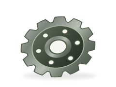

Запчасти
для сильной
техники.
Запасные части, комплектующие и расходные материалы для горнодобывающей и дорожно-строительной спецтехники.
Начните с названия.
Запчасти по системам и агрегатам
Выберите систему или агрегат для техники Caterpillar и Komatsu.
Запчасти для ДВС
Поршни, прокладки и детали двигателя

Запчасти для трансмиссии
Шестерни и фрикционные элементы

Запчасти для электрической системы
Стартеры, датчики и электрокомпоненты

Запчасти для гидравлики
Гидроцилиндры, рукава и уплотнения

Запчасти для топливной системы
Форсунки и топливные насосы

Запчасти для тормозной системы
Диски и комплектующие тормозных узлов

Запчасти для системы охлаждения
Радиаторы и насосы охлаждения

Фильтры
Масляные, воздушные и топливные

Узлы и агрегаты
Двигатели, трансмиссии и редукторы

Понятный путь
от поиска до запроса
Когда техника ждёт ремонта, важно точно определить нужную деталь. Начните с каталога или укажите модель машины и узел в запросе.
«Спецпартс49» — торговое предприятие в Магадане. Специализация — запасные части, комплектующие и расходные материалы для бульдозеров, погрузчиков, карьерных самосвалов и грейдеров.
Больше о компанииПоиск по узлу
ДВС, трансмиссия, гидравлика, фильтры и другие системы в одном каталоге.
Подбор по вашей технике
Модель, артикул, размеры или описание — всё можно указать в запросе.
Несколько позиций — один список
Соберите нужные детали и скачайте запрос для согласования наличия и поставки.
От детали до решения — три шага
Найдите или опишите деталь
Выберите позицию в каталоге или укажите нужный узел и модель техники.
Подготовьте запрос
Добавьте количество, артикул и комментарий. Скачайте готовый список.
Уточните условия
Перед заказом подтвердите совместимость, наличие, цену и срок поставки.